오늘의 과제

박사옷 그림 실패 여덟 장이다. 무엇부터 볼까?

주판봇주름 개수부터 세면 되지 않을까요… 제일 눈에 띄니까…

초파리 연구원주름이 어디서 시작하는지가 먼저야. 진단 순서를 정하자.

X2저희 평가단이 원인을 맞혀 볼게요.
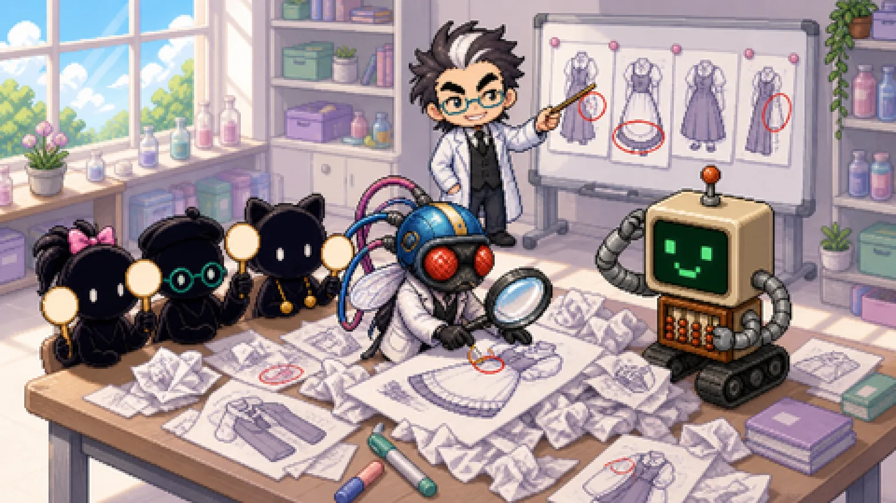
주판봇이 옷 그림 실패작 여덟 장을 가져왔습니다. 평가단은 점수 대신 원인을 맞힙니다. 옷의 실패는 접점·핏·소재·빛·정보량 중 하나가 빠진 자리입니다.
그림 실력·코드·수식을 몰라도 됩니다. 실험을 눌러 보며 따라오세요.
접점·흐름 → 핏 → 소재 → 빛 → 정보량·가림 영역 순서로 확인합니다
요리가 맛없으면 소금보다 먼저 재료가 상했는지, 불 조절이 맞았는지를 봅니다.
의상 검수표를 이 순서로 만들면 수정 요청을 '점검 ② 핏 — 오버핏이니 처짐 주름 추가'처럼 정확히 전할 수 있습니다.


여덟 장 모두 점검표 다섯 항목 중 한 곳에서 처음 걸립니다. 처음 걸린 항목이 가장 먼저 고칠 원인입니다.
f4·f6·f7은 ① 접점·흐름, f3은 ② 핏, f2는 ③ 소재, f5는 ④ 빛, f1·f8은 ⑤ 정보량·가림 영역에서 걸립니다.
작업에서는 수정 요청을 항목 번호와 함께 전합니다. 예: '점검 ④ 빛 — 주름 그림자를 오른쪽 아래 비탈로'.
AI 검수 도구가 '옷 표현 품질 9.0점'이라고 했습니다. 그대로 믿어도 될까요?
품질 점수는 선명함 위주일 때가 많습니다. 주름이 접점에서 시작하는지, 핏·소재와 맞는지는 점검표로 직접 확인해야 합니다.
그림마다 증상을 보고 원인을 고른 뒤, 연결된 원리와 고치는 프롬프트 조각을 확인합니다.
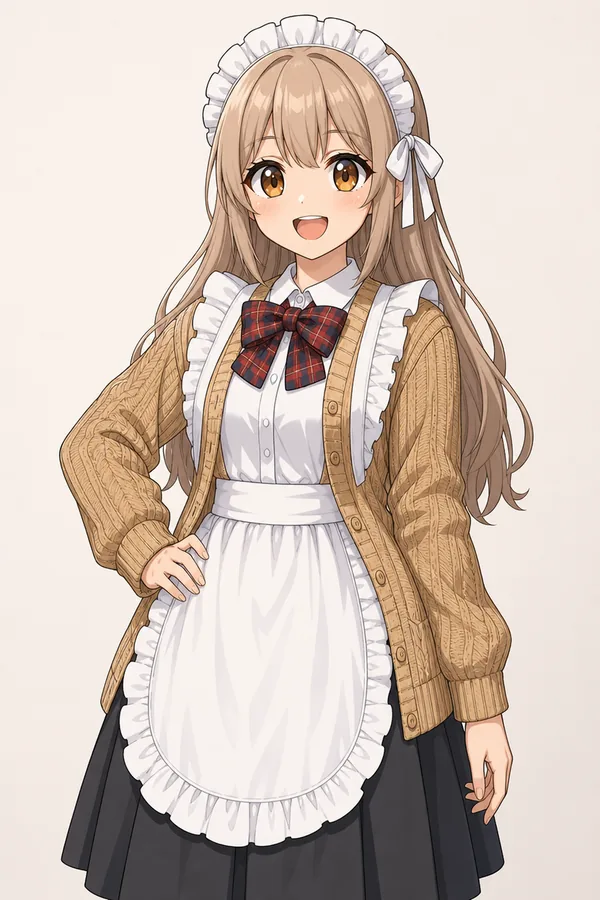
증상애니풍 그림인데 카디건이 잔주름 선 수십 개로 덮여 사진을 베낀 것처럼 보인다.
연결된 원리1부 2단계 정보량
anime illustration with only 3–5 large folds from the shoulders and elbows, no seam lines, two-tone cel shading
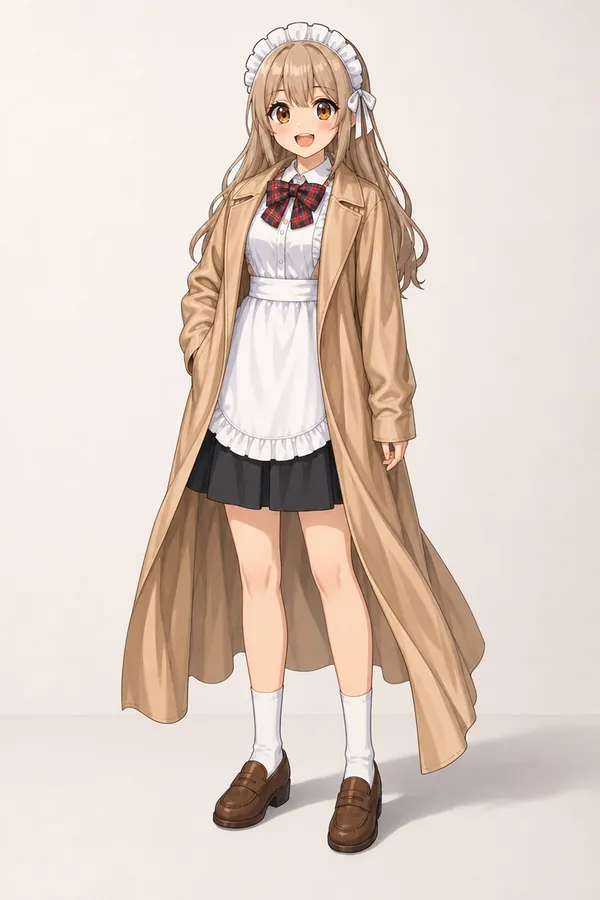
증상두꺼운 울 코트인데 실크 스카프처럼 가는 S자 잔주름이 길게 흘러내린다.
연결된 원리3부 1단계 두께와 간격
thick heavy wool coat, only a few broad folds, matte texture, structured shoulders
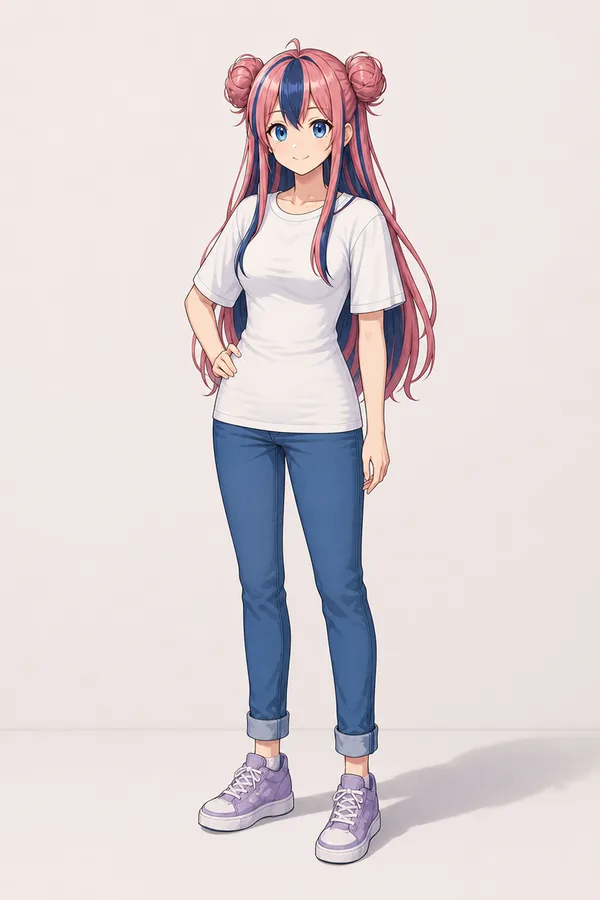
증상오버핏 티셔츠라고 했는데 몸에 딱 붙어 주름이 없다. 어깨선만 내려와 있다.
연결된 원리2부 1단계 여유율
loose oversized t-shirt with about 30% ease, fabric hanging away from the body with large soft drape folds
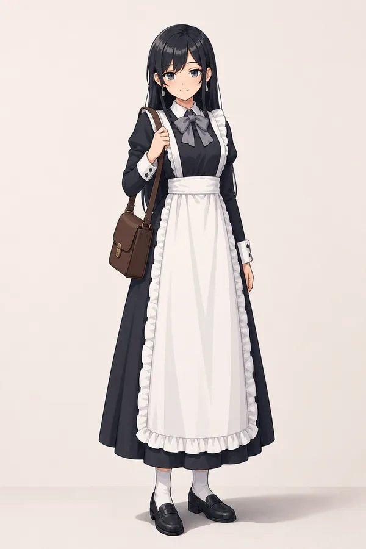
증상숄더백 끈이 어깨에 걸쳐 있는데, 끈이 누른 자리에 눌림이나 주름이 전혀 없다. 가방이 무게 없이 붙어 있는 것처럼 보인다.
연결된 원리4부 4단계 새 접점
the shoulder bag strap presses into the shoulder, fabric folds radiating from the strap toward the chest
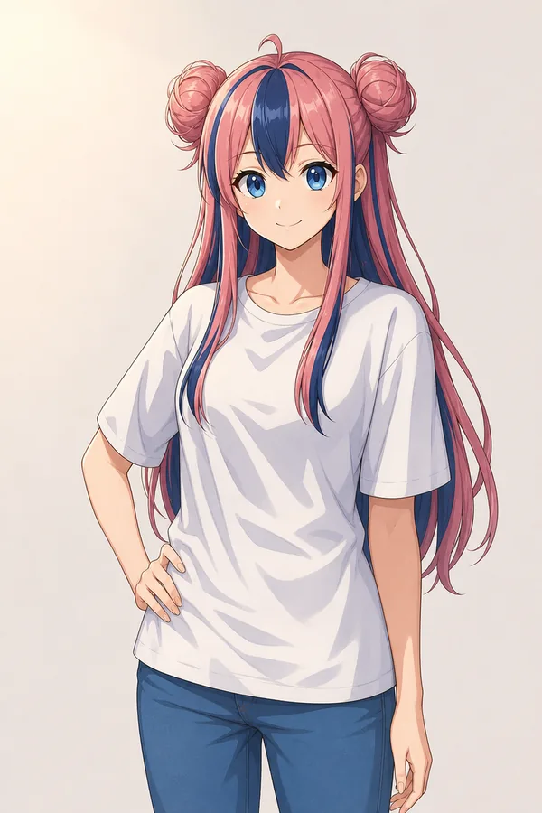
증상빛은 왼쪽 위인데 주름 그림자가 산의 왼쪽(빛 쪽) 비탈에 있어 주름이 움푹 팬 것처럼 보인다.
연결된 원리2부 4단계 그림자로 정리
light from the upper left, fold shadows on the lower right side of each fold ridge
이 그림은 도구가 실수를 스스로 고쳐 그려 실패가 재현되지 않았습니다. 같은 요청도 결과는 매번 다르니, 그림자가 빛 반대쪽에 있는지는 언제나 직접 확인하세요. 증상은 2부 4단계 실험에서 빛을 옮겨 보면 볼 수 있습니다.
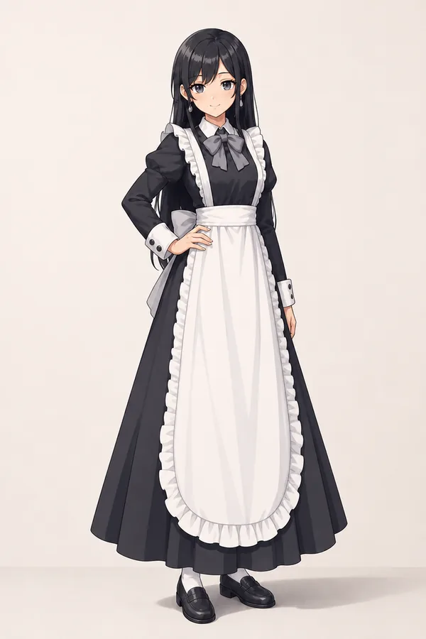
증상치마는 아래로 퍼지는데 프릴 주름 선이 퍼지는 방향과 반대로 기울어 있다.
연결된 원리4부 1단계 공기와 흐름
apron frills fanning out along the flare of the skirt, frill folds following the skirt's outward spread
이 그림도 도구가 프릴을 올바른 방향으로 고쳐 그려 실패가 재현되지 않았습니다. 잘못된 모습은 4부 1단계 실험에서 '프릴이 퍼짐을 따르기'를 끄면 볼 수 있습니다.
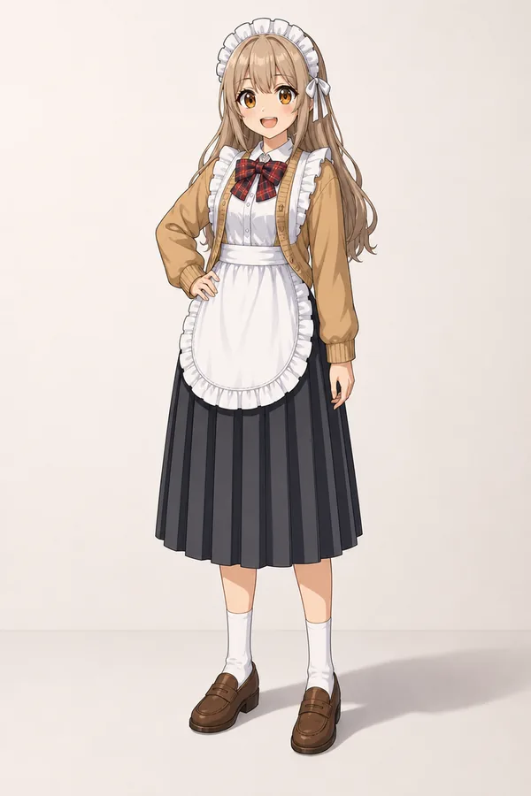
증상한 방향 주름치마인데 모든 주름의 양쪽 뒷면이 다 보이고, 그림자도 양쪽에 있다.
연결된 원리4부 2단계 접힌 뒷면
side-pleated skirt with all pleats folded in one direction, only the inner faces turned toward the viewer are visible
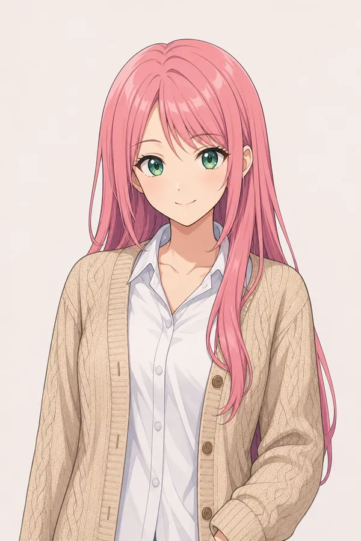
증상옷만 바꾸려 했는데 머리 번과 앞머리 남색 줄이 사라지고 얼굴도 달라졌다.
연결된 원리5부 2단계 가림 영역
inpaint only the clothing area (torso and arms), keep the face, hair buns and navy streaks unchanged; mask edge feathered by a few pixels
고치는 조각은 프롬프트가 아니라 도구 설정입니다. 가림 영역을 다시 그리고, 캐릭터 고정 문장을 함께 넣습니다.
'교복', '세일러복'처럼 학교와 연결된 옷 이름을 프롬프트에 넣으면, AI가 캐릭터를 실제보다 어리게 그리는 일이 있습니다. 그 옷과 함께 학습된 그림들이 대부분 학생이었기 때문입니다.
이 연구실의 모델은 모두 20대 성인 연구원입니다. 그래서 이 시리즈는 학교 옷 대신 랩코트·티셔츠·카디건·메이드복·셔츠와 조끼처럼 연구실 의상으로 같은 원리를 실습했습니다.
고치는 법: 옷 이름 대신 소재·핏·형태를 적고('navy pleated skirt, crisp white cotton blouse'), 'adult in her early twenties, mature proportions'처럼 나이를 분명히 적습니다. 결과가 어려 보이면 다시 생성합니다.
연결된 원리5부 1단계 옷 고정 문장
이 부에서 배운 원리를 그림 생성 AI(Genspark 등)로 직접 확인합니다. A는 이 페이지 그림을 실제로 만든 프롬프트, B는 원리를 하나 빼거나 바꾼 비교용 문장입니다.
참고 그림 내려받기: haru_anime_base · sia_anime_base · moa_anime_base · haru_sheet · sia_sheet · moa_sheet · doctor_sheet · fruitfly_sprites_6 · jupanbot_ref_genspark_v0 · pixel_style_ref_prev_cover
일부러 소재를 뒤바꾼 그림을 만든 뒤, 실패 카드의 '고치는 조각'을 같은 대화에 넣어 고칩니다.
첨부: 해당 캐릭터의 refs/*_anime_base.png
Illustration, vertical 2:3. Art style: high-quality anime illustration, clean confident lineart, two-tone cel shading with a darker second shadow only in the deepest folds, natural adult proportions. Match the attached reference images exactly (face, hair, colors, accessories). All characters are adults in their early twenties (the Professor is an adult man); modest outfits exactly as described. This is an intentional FAILURE example for a teaching page: draw the mistake described below clearly and convincingly, while everything else stays correct. Full body of Moa (adult maid intern, long ash-beige wavy hair, white frilled maid headband with a white ribbon over her LEFT ear, amber eyes), wearing a camel coat over her outfit. Intentional mistake: the coat is supposed to be thick heavy wool, but it is drawn like thin silk: many fine, long, flowing S-shaped folds and a shiny drape. Plain off-white studio background. No text, no letters, no numbers, no logos, no watermark, no revealing clothing, not childlike, no school uniform, not resembling any famous anime character.
Same character and pose. Fix: thick heavy wool coat, only a few broad folds, matte texture, structured shoulders. Still no text.
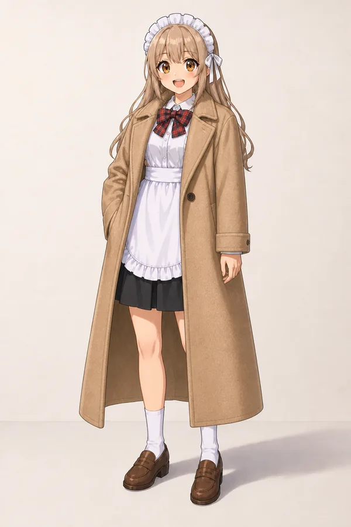
실제 결과: 고친 B는 굵은 주름 몇 개와 각진 어깨의 울 코트가 되었습니다.
옷만 바꾸려다 사람이 바뀐 결과를 만들어 보고, 고칠 곳이 프롬프트가 아니라 가림 영역이라는 것을 확인합니다.
첨부: 해당 캐릭터의 refs/*_anime_base.png
Illustration, vertical 2:3. Art style: high-quality anime illustration, clean confident lineart, two-tone cel shading with a darker second shadow only in the deepest folds, natural adult proportions. Match the attached reference images exactly (face, hair, colors, accessories). All characters are adults in their early twenties (the Professor is an adult man); modest outfits exactly as described. This is an intentional FAILURE example for a teaching page: draw the mistake described below clearly and convincingly, while everything else stays correct. Upper body portrait wearing a camel knit cardigan over a white blouse. Intentional mistake: this was supposed to be Haru with only her clothes changed, but the result is a different person: pink hair WITHOUT the two hair buns and WITHOUT the navy streaks, a different face shape and eye color (green eyes). Plain off-white studio background. No text, no letters, no numbers, no logos, no watermark, no revealing clothing, not childlike, no school uniform, not resembling any famous anime character.
5부 2단계 실습 순서대로, 원본 하루 그림에서 옷 영역만 칠하고 다시 그립니다. 프롬프트에 캐릭터 고정 문장(머리 번 두 개, 앞머리 가운데 남색 줄, 파란 눈)을 함께 넣습니다.

실제 결과: B 그림은 5부 '옷만 다시 그리기' 실습과 같은 결과입니다. 얼굴과 머리는 원본 그대로입니다.
이 실패는 도구가 스스로 고쳐 버리기 쉽습니다(이 페이지 그림이 그 예). 두 번까지 시도해 보고, 고쳐져 나오면 그것도 기록합니다.
첨부: 해당 캐릭터의 refs/*_anime_base.png
Illustration, vertical 2:3. Art style: high-quality anime illustration, clean confident lineart, two-tone cel shading with a darker second shadow only in the deepest folds, natural adult proportions. Match the attached reference images exactly (face, hair, colors, accessories). All characters are adults in their early twenties (the Professor is an adult man); modest outfits exactly as described. This is an intentional FAILURE example for a teaching page: draw the mistake described below clearly and convincingly, while everything else stays correct. Upper body of Haru (adult lab assistant, long straight pink hair with navy streaks and a thick navy streak down the center of the bangs, two round hair buns on top, small ahoge, big blue eyes), wearing a loose white t-shirt (no lab coat, no hoodie), a visible lamp glow at the upper left. Intentional mistake: the face and body are lit from the upper left, but every fold shadow on the t-shirt is placed on the UPPER LEFT side of each fold ridge (the lit side), so the folds look dented instead of raised. Plain off-white studio background. No text, no letters, no numbers, no logos, no watermark, no revealing clothing, not childlike, no school uniform, not resembling any famous anime character.
결과가 맞게 나와도 매번 직접 확인합니다: 빛이 오는 쪽을 정하고, 주름 산마다 그림자가 반대쪽 비탈에 있는지 하나씩 봅니다. 잘못된 모습은 2부 4단계 실험에서 빛을 옮겨 보면 볼 수 있습니다.
실패 그림을 일부러 만드는 이유는 '틀린 모습을 알아보는 눈'을 기르기 위해서입니다. 도구가 고쳐 주더라도 확인 습관은 그대로 둡니다.
'직접 만들어 보기'가 이 페이지 그림을 다시 만들어 보는 것이었다면, 연습 문제는 새 상황을 스스로 풀어 보는 것입니다. 정답 그림은 하나가 아니므로, 아래 '예상 결과'는 완성 예시 프롬프트로 실제로 만든 한 가지 예입니다.
참고 그림 내려받기: haru_anime_base · sia_anime_base · moa_anime_base · haru_sheet · sia_sheet · moa_sheet · doctor_sheet · fruitfly_sprites_6 · jupanbot_ref_genspark_v0 · pixel_style_ref_prev_cover
일부러 소재가 뒤바뀐 실패(부드러운 니트를 판자처럼 각지게)를 만들고, 점검표로 원인을 찾은 뒤 같은 대화에서 고칩니다. 한 장에 실패와 고친 결과를 나란히 둡니다.
① 접점·흐름 통과 → ② 핏 통과 → ③ 소재에서 걸림(니트인데 각진 마름모 그림자).
soft thick knit, broad rounded folds, rounded soft shadows.
두 패널 / 왼쪽(실패): [니트]인데 [각진 마름모 주름] / 오른쪽(고침): [둥근 주름과 둥근 그림자] / 나머지는 같게
첨부: refs/sia_anime_base.png, refs/sia_sheet.png
Illustration, wide 16:9. Art style: high-quality anime illustration, clean confident lineart, two-tone cel shading with a darker second shadow only in the deepest folds, natural adult proportions. Match the attached reference images exactly (face, hair, colors, accessories). All characters are adults in their early twenties (the Professor is an adult man); modest outfits exactly as described. Two panels of the same pose (both arms resting on a desk, leaning forward slightly): LEFT intentional failure — Sia (adult maid intern, long straight jet-black hair, no headdress, gray eyes, small silver earrings), wearing a cream chunky knit sweater and a black skirt, but the knit sweater is drawn like stiff cardboard with sharp angular folds and diamond-shaped shadows; RIGHT the corrected version — the same sweater with soft broad rounded folds and rounded soft shadows. This is a teaching image showing a mistake and its fix. Light from the upper left. Plain off-white studio background or a bright clean lab interior. No text, no letters, no numbers, no logos, no watermark, no revealing clothing, not childlike, no school uniform, not resembling any famous anime character.
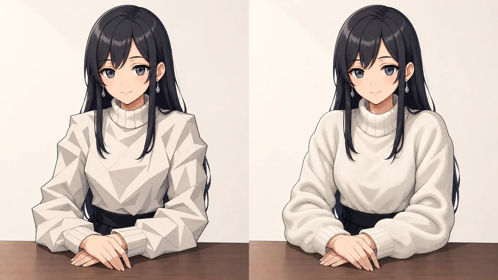
왼쪽 스웨터는 종이를 접은 듯 각진 조각 그림자 때문에 딱딱해 보이고, 오른쪽은 같은 자세인데 둥근 주름으로 바뀌어 포근해 보입니다. 바뀐 것은 소재 표현 하나뿐입니다.
실제로 나온 결과 — 실패가 재현되었습니다. 왼쪽 스웨터는 각진 조각처럼 딱딱하고, 오른쪽은 둥근 주름으로 고쳐졌습니다.
| 증상 | 같은 대화에 이어 붙일 문장 |
|---|---|
| 왼쪽도 둥글게 나왔다(도구가 실수를 고침) | 실패가 재현되지 않아도 괜찮습니다. 두 번까지 다시 시도하고, 그래도 고쳐지면 '결과는 매번 다르다'는 기록으로 남기세요. |
| 오른쪽이 왼쪽과 같다 | Same image. Change only: in the right panel the knit has soft broad rounded folds and rounded shadows. |
팔짱을 꼈는데 주름이 팔 쪽으로 모이지 않는 실패(접점 무시)를 만들고, 점검표 ① 접점·흐름에서 걸리는지 확인한 뒤 고칩니다.
팔이 몸통에 닿은 곳과 팔꿈치. 주름은 그쪽으로 모여야 합니다.
주름이 그냥 세로로 처지기만 하고 팔 쪽과 상관없음.
두 패널 / 왼쪽(실패): [팔짱], 주름이 [접점과 무관하게 세로로] / 오른쪽(고침): 주름이 [팔이 닿은 곳으로 모임]
첨부: refs/haru_anime_base.png, refs/haru_sheet.png
Illustration, wide 16:9. Art style: high-quality anime illustration, clean confident lineart, two-tone cel shading with a darker second shadow only in the deepest folds, natural adult proportions. Match the attached reference images exactly (face, hair, colors, accessories). All characters are adults in their early twenties (the Professor is an adult man); modest outfits exactly as described. Two panels of the same upper body pose with arms crossed: LEFT intentional failure — Haru (adult lab assistant, long straight pink hair with navy streaks and a thick navy streak down the center of the bangs, two round hair buns on top, small ahoge, big blue eyes), wearing a plain white t-shirt (no lab coat, no hoodie), but the t-shirt folds ignore the arms: only straight vertical folds hanging down as if she were standing with arms relaxed; RIGHT the corrected version — the t-shirt folds are pulled toward where the crossed arms press against the torso and gather inside the elbows. This is a teaching image showing a mistake and its fix. Light from the upper left. Plain off-white studio background or a bright clean lab interior. No text, no letters, no numbers, no logos, no watermark, no revealing clothing, not childlike, no school uniform, not resembling any famous anime character.
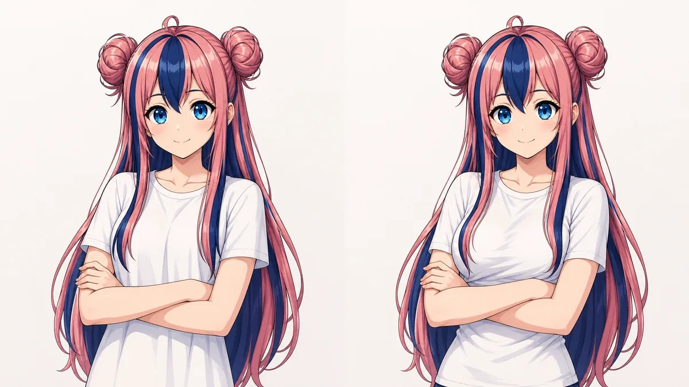
왼쪽은 팔짱을 꼈는데 티셔츠가 차렷 자세처럼 세로로만 처져 옷과 팔이 따로 놉니다. 오른쪽은 팔이 누른 곳으로 주름이 모여 팔짱의 힘이 옷에 전해집니다.
실제로 나온 결과 — 실패가 재현되지 않았습니다. 왼쪽도 주름이 팔 쪽으로 모여 두 패널이 거의 같습니다. 도구가 실수를 고쳐 그린 경우로, 잘못된 모습은 2부 2단계 실험에서 '차렷'과 '팔짱'을 번갈아 보면 볼 수 있습니다.
| 증상 | 같은 대화에 이어 붙일 문장 |
|---|---|
| 왼쪽도 제대로 나왔다(도구가 실수를 고침) | 두 번까지 다시 시도하고, 그래도 고쳐지면 기록으로 남기세요. 잘못된 모습은 2부 2단계 실험에서 '차렷'과 '팔짱'을 번갈아 보면 볼 수 있습니다. |
| 오른쪽 주름이 약하다 | Same image. Change only: in the right panel, folds clearly pull toward the crossed arms and gather inside the elbows. |
| 항목 | 주판봇 | 초파리 |
|---|---|---|
| 원인 맞힘(8개) | 4 | 8 |
| 고치는 조각의 정확함 | 5 | 8 |
| 다시 생성한 결과 | 5 | 8 |
| 합계 | 14 | 24 |


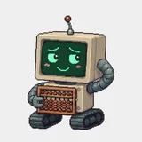
점수는 이야기 속 예시입니다. 실제 그림을 평가한 값이 아닙니다.
| 주제 | 한 줄 | 작업에서는 |
|---|---|---|
| 진단 순서 | 접점·흐름 → 핏 → 소재 → 빛 → 정보량·가림 | 점검 번호로 수정 요청 |
| 실패 8종 | f1~f8 | 원인마다 고치는 조각 |
| 옷 이름과 나이 | 학교 옷 이름을 쓰면 어려 보이기 쉽다 | 소재·핏·형태와 나이를 적기 |

이 페이지에 나온 개념·방법·비유·쓰임을 모았습니다. 검색하고, "설명 보러 가기"로 본문에 돌아갑니다.
지식 색인을 출처와 함께 파일로 내려받습니다. 서지 관리는 BibTeX·RIS, 온톨로지 편집은 Turtle, 그래프 도구는 CSV, 여러 페이지 합치기는 kg.json입니다.